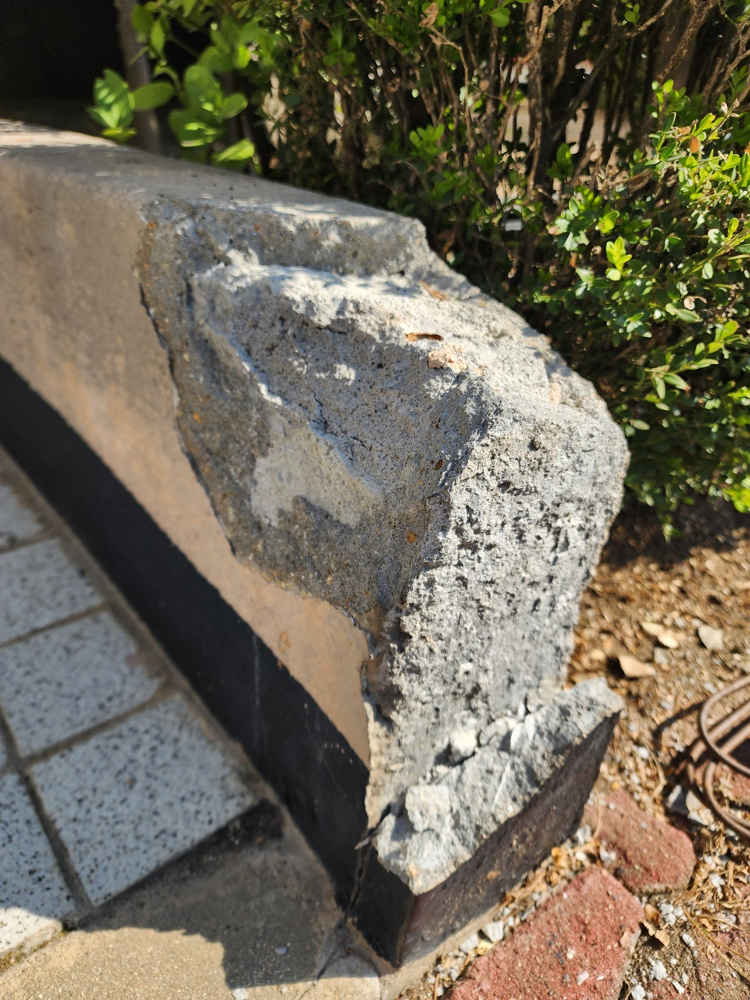
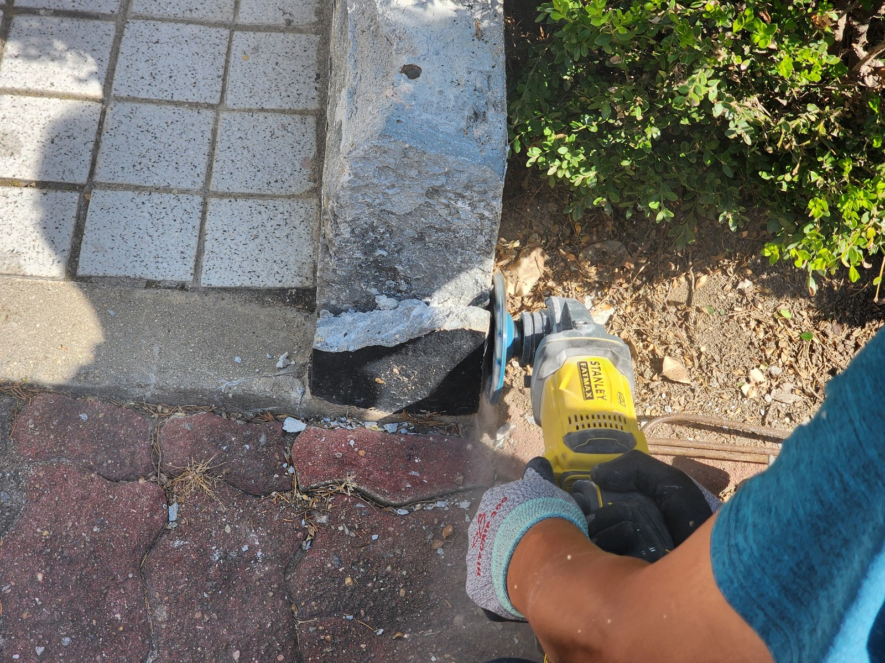
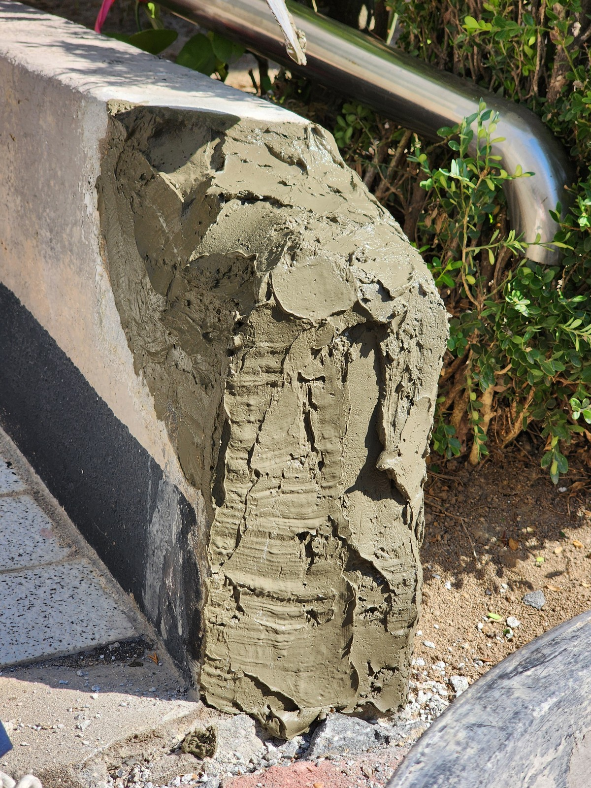
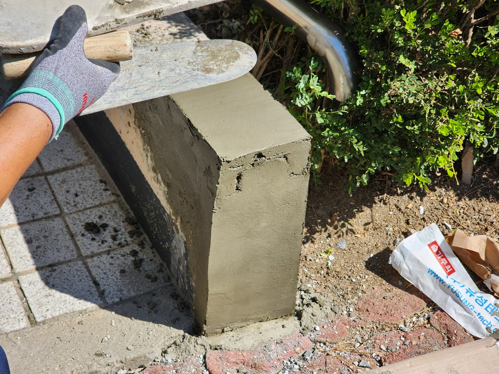
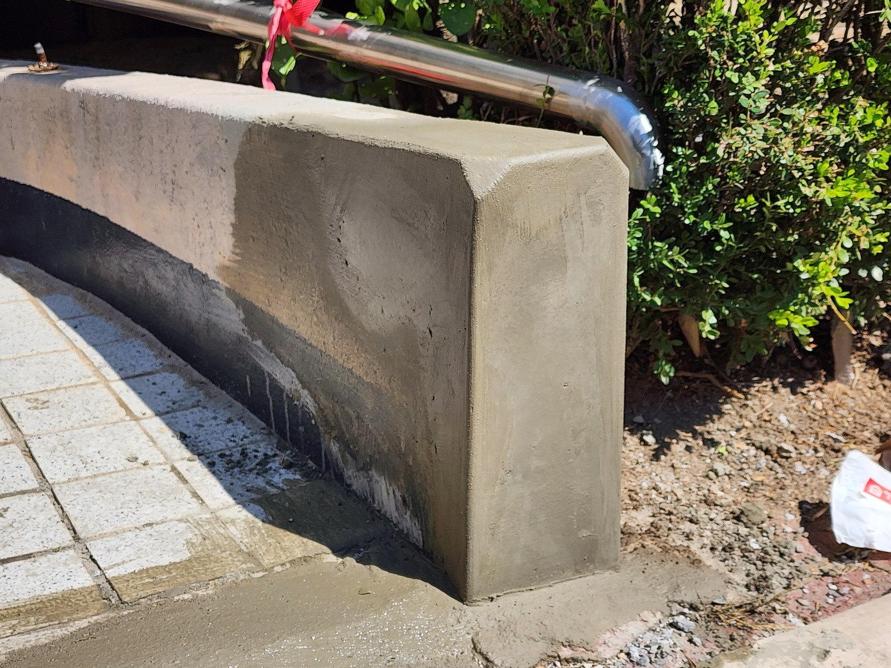

한밭우성아파트 출입구 벽체 미장 보수｜손상된 모서리를 다시 잡는 과정

현장 작업 한눈에 보기
- 현장
- 한밭우성아파트 · 출입구 주변 벽체
- 문제
- 벽체 마감면과 모서리 손상
- 작업
- 손상 구간 바탕 처리
모르타르 채움·모서리와 면 미장 - 결과
- 미장 보수 구간 기록
후속 도장·난간 체결·구조 성능은 미확인
출입구 주변 낮은 벽체의 손상 부위를 다룬 기록입니다. 기존 상태, 바탕 처리, 모르타르 채움과 면을 잡는 과정을 실제 사진 6장으로 소개합니다.
마감 전에 남긴 현장 이야기
안녕하세요. 만물인테리어입니다. 이번에는 실내가 아닌 아파트 출입구 주변의 미장 보수 기록입니다.
한밭우성아파트에서 2026년 9월 16일 남긴 사진을 보면, 출입구 주변의 낮은 벽체의 손상 부위를 다듬고 모르타르로 면을 잡는 과정을 따라갈 수 있습니다.
1. 가장자리에서 보이는 손상
처음 사진에는 낮은 벽체의 모서리와 마감면이 깨져 안쪽이 드러난 모습이 보입니다. 위쪽 면과 옆면이 만나는 경계가 고르지 않은 상태였습니다.
이 기록만으로 구조적인 손상 여부나 발생 원인까지 판단하지는 않았습니다.

2. 보수할 바탕을 다듬는 과정
손상 구간 주변을 공구로 다듬는 장면입니다. 새 재료를 채우기 전 바탕을 처리하는 공정으로 담았습니다.

3. 파인 부분에 모르타르 채우기
비어 있던 부분에 모르타르를 채운 상태입니다. 아직 표면이 거칠어, 재료를 채우는 단계와 면을 마무리하는 단계가 다르다는 것을 볼 수 있습니다.
사진에 보이는 보수 범위를 중심으로 기록했습니다.

4. 흙손으로 모서리의 선을 잡습니다
흙손을 대고 벽체의 가장자리와 면을 다듬고 있습니다. 채운 재료를 그대로 두지 않고 주변 형태에 맞추어 정리하는 과정입니다.

5. 길게 이어지는 보수면
각도를 넓히면 출입구 주변으로 이어지는 벽체 보수 구간이 보입니다. 시작 사진의 거친 모서리와 비교해 새 미장면이 어디에 형성됐는지 확인할 수 있습니다.
주변 난간의 체결이나 안전 점검까지 완료됐다는 의미의 사진은 아닙니다.

6. 모서리 쪽에서 남긴 마무리 기록
마지막은 벽체 모서리 쪽 보수면입니다. 이번 사례는 모르타르로 면과 모서리를 잡은 상태까지 소개합니다.
후속 도장, 충분한 양생 여부, 난간 최종 체결은 사진에서 확인되지 않아 완료 공정에 넣지 않았습니다.
확인한 범위와 상담 안내
공용부 보수를 상담하실 때는 가까이 찍은 손상 사진과 주변 동선이 보이는 전체 사진을 함께 준비해 주세요. 보수와 후속 도장, 주변 시설물 조치의 범위를 나누어 확인하는 데 도움이 됩니다.
만물인테리어 상담 010-2397-8629. 최종 작업 범위와 금액은 현장 확인 후 안내합니다.